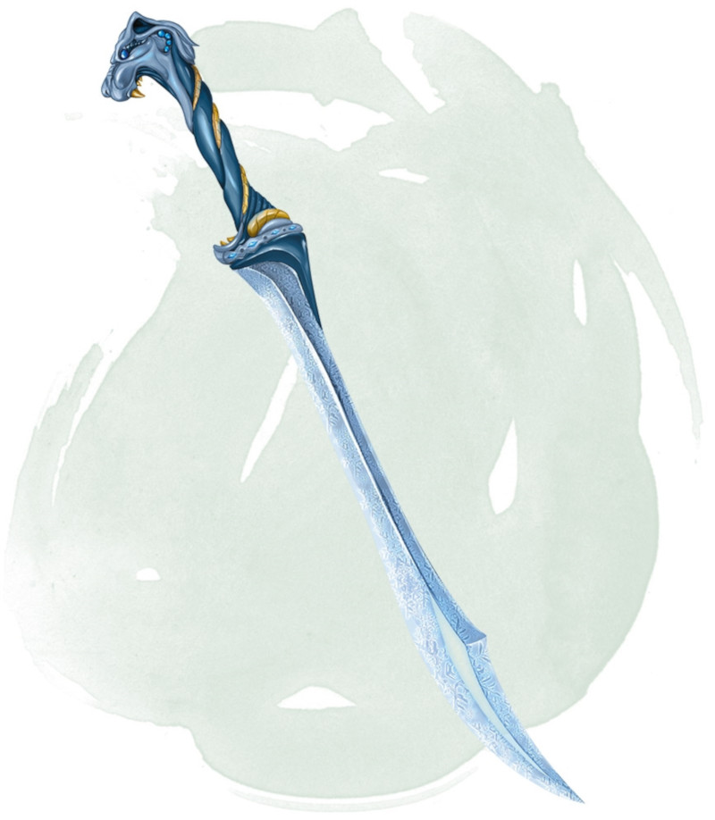

Fer gelé
[ Frost Brand ]
Arme (toute épée), très rare (nécessite un lien)
Lorsque vous touchez avec une attaque utilisant cette épée magique, la cible subit 1d6 dégâts de froid supplémentaires. En outre, tant que vous tenez l'épée, vous avez la résistance aux dégâts de feu. Dans des températures de congélation, la lame émet en lumière vive dans un rayon de 3 mètres et une lumière faible sur 3 mètres supplémentaires.
Lorsque vous dégainez cette arme, vous pouvez éteindre toutes les flammes non magiques dans un rayon de 9 mètres autour de vous. Cette propriété ne peut pas être utilisée plus d'une fois par heure.
Lorsque vous dégainez cette arme, vous pouvez éteindre toutes les flammes non magiques dans un rayon de 9 mètres autour de vous. Cette propriété ne peut pas être utilisée plus d'une fois par heure.
Dungeon Master´s Guide (SRD)
